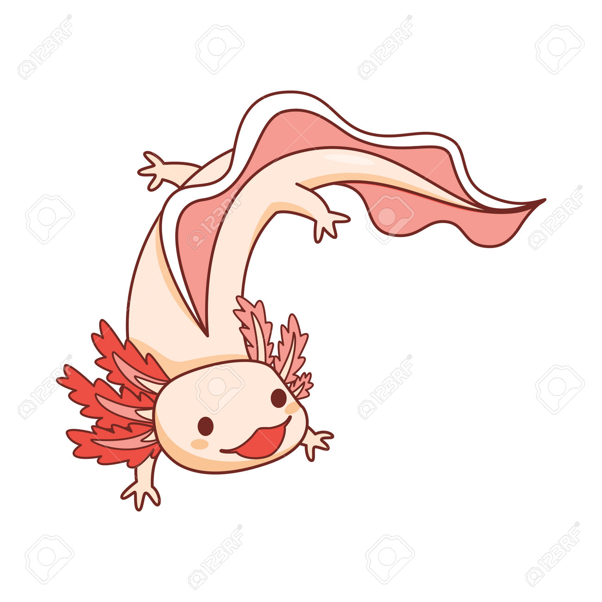

Datos curiosos

Este es el texto de mi primer artuculo
Este es el texto de mi segundo articulo
¡Hola, mundo!
Esta es mi primera pagina web.
Introduccion a Ecosicraft
El suelo es el hábitat más biodiverso del planeta: Se estima que casi el 60 % de todas las especies viven en el suelo, incluyendo hongos, bacterias y plantas.
Los desiertos no están vacíos: Aunque parecen inhóspitos, el Sahara alberga más de 500 especies de plantas, 70 de mamíferos y 90 de aves.
Los ecosistemas acuáticos dominan el planeta: Aproximadamente tres cuartas partes de los ecosistemas son acuáticos, incluyendo océanos, ríos y lagos.
Los árboles más antiguos del mundo: En California, hay un pino llamado "Matusalén" que tiene más de 4,850 años.
Las tierras áridas son esenciales: Generan el 44 % de los cultivos mundiales y sustentan la vida de más de 2,000 millones de personas